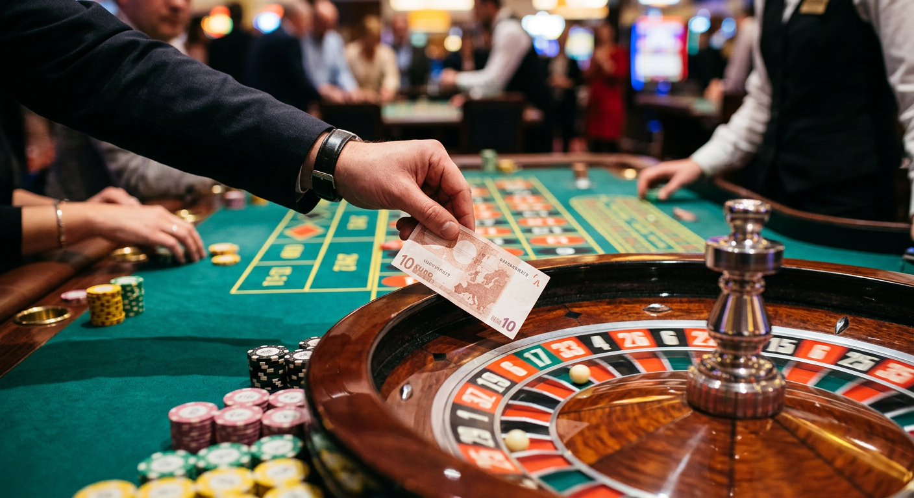
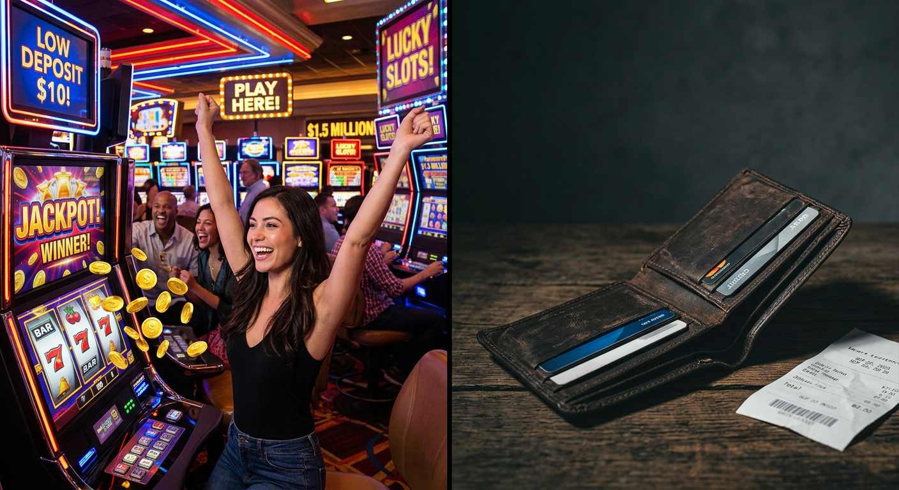
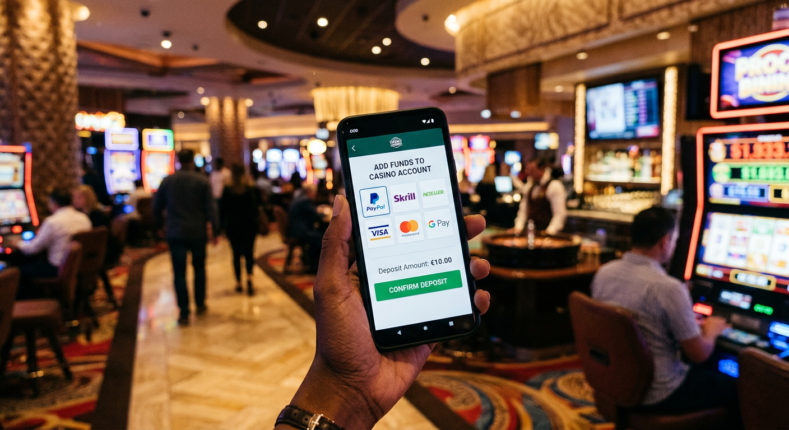
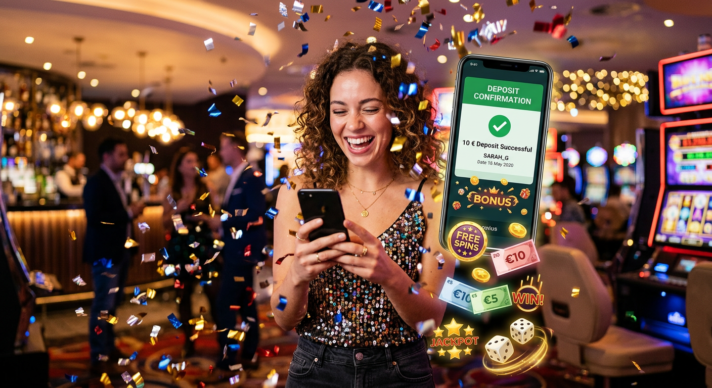
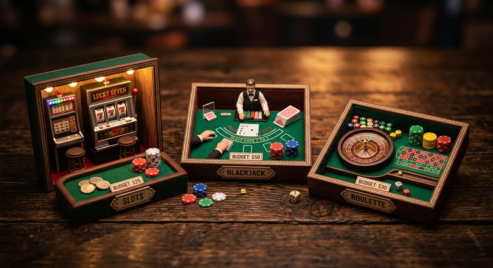

Casino deposito minimo 10 euro: guida ai migliori siti AAMS
Il panorama del gioco d’azzardo online in Italia ha subito una profonda trasformazione negli ultimi anni, rendendo l'accesso alle piattaforme sempre più democratico. Uno degli aspetti che ha maggiormente influenzato questa evoluzione è la possibilità di iniziare l'esperienza ludica con un investimento contenuto. Cercare un casino deposito minimo 10 euro è diventata la priorità per migliaia di utenti che desiderano testare l'affidabilità di un operatore senza impegnare cifre importanti fin dal primo istante.
Questa soglia di ingresso rappresenta il perfetto equilibrio tra prudenza e opportunità. Con dieci euro, infatti, è possibile non solo esplorare l'intero catalogo di giochi, ma anche attivare bonus di benvenuto che raddoppiano il capitale iniziale o offrono giri gratuiti. In questo articolo esploreremo nel dettaglio quali sono i migliori casino che accettano questa ricarica, analizzando i metodi di pagamento, la sicurezza garantita dall'Agenzia delle Accise, Dogane e Monopoli (ADM) e le strategie per massimizzare un budget ridotto.
Giocare in modo responsabile significa anche saper gestire il proprio bankroll. Optare per un casino deposito minimo 10 euro permette di mantenere un controllo rigoroso sulle proprie finanze, godendo comunque di un'esperienza di alto livello tecnologico. Scopriamo insieme quali piattaforme dominano il mercato italiano in questa specifica categoria.
Classifica dei migliori casinò con ricarica minima 10€
Selezionare il giusto operatore richiede un'analisi attenta di diversi fattori: velocità dei pagamenti, varietà delle slot e qualità dell'assistenza clienti. In Italia, la concorrenza tra i migliori casino è serrata, ma alcuni nomi spiccano per la flessibilità dei loro limiti di versamento. Di seguito, presentiamo una selezione accurata di piattaforme dove l'esperienza utente è messa al primo posto.
| Operatore | Bonus Benvenuto | Vantaggio Principale | Link Ufficiale |
|---|---|---|---|
| Millioner | Fino a 500€ + 100 Free Spins | Ampia selezione di slot esclusive | Visita Millioner |
| Roulettino | 100% fino a 300€ | Interfaccia ottimizzata per mobile | Visita Roulettino |
| Wyns | Bonus senza deposito + ricarica | Programma fedeltà molto ricco | Visita Wyns |
Ogni casino deposito minimo 10 euro elencato sopra è stato testato per garantire che la transazione sia immediata e priva di commissioni nascoste. Oltre a questi brand emergenti, ci sono operatori consolidati che hanno fatto la storia del gambling in Italia, offrendo garanzie di solidità e trasparenza assolute.
SNAI: Il leader italiano per i piccoli depositi
SNAI non ha bisogno di presentazioni. È uno dei pilastri del gioco in Italia e offre una delle piattaforme più complete in assoluto. La scelta di supportare un casino deposito minimo 10 euro rende il sito accessibile a tutti, permettendo di spaziare dalle scommesse sportive al poker, fino alle slot machine più moderne. La loro app è considerata un punto di riferimento per fluidità e sicurezza.
LeoVegas: Eccellenza nel gioco da mobile
Se preferite giocare da smartphone, LeoVegas è probabilmente la scelta migliore. Questo operatore ha vinto numerosi premi internazionali per la sua tecnologia "mobile first". Effettuare un versamento in questo casino deposito minimo 10 euro è semplicissimo grazie all'integrazione di sistemi rapidi come Apple Pay e PayPal. La navigazione è intuitiva e i tempi di caricamento dei giochi sono ridotti al minimo.
888casino: Grandi bonus per ricariche contenute
888casino è noto per la sua generosità. Anche con una ricarica di soli 10 euro, il sito permette spesso di sbloccare promozioni molto interessanti. La particolarità di questo operatore risiede nei giochi prodotti internamente (Section8 Studios), che non troverete in nessun altro casino deposito minimo 10 euro. La sezione Live Casino è particolarmente curata, con croupier professionisti che parlano italiano.
Perché scegliere un versamento di piccola taglia?

Molti giocatori si chiedono se valga la pena depositare una cifra così esigua. La risposta è decisamente sì, specialmente per chi si avvicina per la prima volta a un nuovo operatore. Un casino deposito minimo 10 euro funge da "test drive". Vi permette di verificare se l'interfaccia vi piace, se i giochi scorrono senza lag e, soprattutto, se il processo di prelievo è veloce e senza intoppi.
Inoltre, limitare la ricarica a dieci euro è una forma di autoprotezione. Nel contesto del gioco d'azzardo responsabile, stabilire tetti di spesa bassi aiuta a evitare comportamenti compulsivi. È un modo intelligente per divertirsi senza che il gioco diventi un peso finanziario. Molte piattaforme, come Wildtokyo Casinò o Astromania Casinò, promuovono attivamente questi limiti per favorire un ambiente di gioco sano.
Non bisogna dimenticare che molti bonus sono strutturati proprio per essere attivati con questa cifra. Spesso, un casino deposito minimo 10 euro offre il 100% di bonus, portando il vostro saldo a 20 euro. Con una gestione oculata delle puntate (ad esempio 0,10€ a spin), 20 euro possono garantire ore di intrattenimento e diverse possibilità di vincita.
Pro e contro dei casino deposito minimo 10 euro

Come ogni scelta nel mondo del gaming online, anche quella di optare per un deposito contenuto presenta dei vantaggi e dei limiti che vanno valutati con attenzione. Non tutti i migliori casino gestiscono queste cifre allo stesso modo, quindi è bene avere un quadro chiaro prima di procedere.
- Vantaggi:
- Rischio finanziario estremamente basso.
- Accesso completo a tutte le funzionalità del sito.
- Possibilità di testare diversi operatori con un investimento totale minimo.
- Attivazione della maggior parte dei bonus di benvenuto standard.
- Svantaggi:
- Alcuni metodi di pagamento (come il bonifico) potrebbero non essere disponibili per cifre così basse.
- Il valore assoluto del bonus ricevuto sarà limitato (es. 10€ di bonus su 10€ di ricarica).
- Possibilità di esaurire il budget rapidamente se si scelgono giochi ad alta volatilità.
In generale, i benefici superano di gran lunga gli svantaggi, specialmente se si considera che operatori come Diva Spin Casinò e Lunubet Casinò stanno ottimizzando i loro sistemi per rendere queste piccole transazioni sempre più convenienti. La flessibilità è la parola d'ordine nel mercato attuale.
Metodi di pagamento ideali per ricaricare 10€

La scelta del sistema di ricarica è fondamentale quando si interagisce con un casino deposito minimo 10 euro. Alcuni strumenti sono più adatti di altri, sia per la velocità che per l'assenza di commissioni. In Italia, i giocatori hanno a disposizione una vasta gamma di opzioni sicure e tracciate, monitorate costantemente dall'ADM.
È importante verificare sempre i termini e le condizioni del sito scelto. Alcuni portafogli elettronici potrebbero escludervi dalla partecipazione ai bonus di benvenuto. In piattaforme come Spinempire Casinò o Boomerangbet Casino, le informazioni sui limiti minimi per ogni metodo sono solitamente indicate chiaramente nella sezione "Cassa".
PayPal e portafogli elettronici
PayPal è il re indiscusso dei pagamenti online. La sua integrazione in un casino deposito minimo 10 euro garantisce transazioni istantanee e un livello di protezione dell'acquirente impareggiabile. Oltre a PayPal, anche Skrill e Neteller sono molto diffusi. Questi strumenti permettono di separare il budget dedicato al gioco dal proprio conto bancario principale, offrendo un ulteriore strato di privacy e controllo.
Postepay e carte prepagate italiane
La Postepay è lo strumento preferito dai giocatori in Italia. Essendo una carta prepagata del circuito Visa o Mastercard, è accettata praticamente da ogni casino deposito minimo 10 euro. È comoda, facile da ricaricare in tabaccheria o tramite app, e non richiede la condivisione di dati bancari sensibili con il sito di gioco. Anche la versione Evolution è ampiamente supportata.
Bonifico bancario e tempi di attesa
Il bonifico bancario è l'opzione più tradizionale, ma spesso la meno consigliata per ricariche di piccola entità. Molti migliori casino impongono un limite minimo più alto (spesso 20€ o 50€) per i bonifici a causa dei costi di gestione. Inoltre, i tempi di accredito variano dai 2 ai 5 giorni lavorativi. Se cercate l'immediatezza in un casino deposito minimo 10 euro, è meglio puntare su carte o e-wallets.
Bonus e promozioni attivabili con dieci euro

Una delle paure più comuni è che versando poco si venga esclusi dalle promozioni. Fortunatamente, la maggior parte dei migliori casino attiva i propri bonus proprio a partire dalla soglia dei 10€. Potreste ricevere un bonus sul primo deposito del 100%, oppure pacchetti di giri gratuiti da utilizzare sulle slot machine più popolari del momento.
Alcune piattaforme innovative offrono meccaniche particolari come il Bonus Crab, una sorta di gioco nel gioco che permette di vincere premi extra ogni giorno con una semplice ricarica. È fondamentale leggere il regolamento: controllate sempre il "wagering requirement" (requisito di scommessa), ovvero quante volte il bonus deve essere giocato prima di poter prelevare le vincite. In un casino deposito minimo 10 euro onesto, questo valore oscilla solitamente tra 30x e 45x.
Non dimentichiamo i bonus senza deposito. Alcuni operatori, per invogliare i nuovi utenti, offrono una piccola somma o dei free spins solo per aver convalidato il documento d'identità. Questo può essere cumulato con il vostro casino deposito minimo 10 euro, creando un bankroll iniziale di tutto rispetto senza aver investito cifre folli.
I giochi più adatti per un budget ridotto

Avere dieci euro sul conto richiede una strategia di gioco oculata. Non tutti i titoli presenti su il sito sono adatti a chi ha un budget contenuto. L'obiettivo è prolungare l'esperienza di gioco e massimizzare le probabilità di ottenere una vincita che permetta di incrementare il saldo. Operatori come VegasHero Casinò e Wonderluck Casinò offrono filtri per selezionare i giochi in base alle puntate minime.
La scelta del gioco dipende molto dal vostro profilo di rischio. Se cercate il "colpo grosso", le slot con jackpot sono allettanti, ma ricordate che la probabilità di vincita è molto bassa. Se invece puntate al divertimento prolungato in un casino deposito minimo 10 euro, le opzioni descritte di seguito sono le più indicate.
Slot machine a bassa volatilità
Le slot a bassa volatilità sono caratterizzate da vincite frequenti ma di piccolo importo. Questo è l'ideale per chi gioca con un casino deposito minimo 10 euro, poiché permette di rigenerare continuamente il saldo e continuare a giocare. Titoli famosi come Starburst o Blood Suckers sono perfetti per questa strategia. Impostando la puntata minima (spesso solo 0,10€), potrete effettuare ben 100 giri con il vostro deposito iniziale.
Tavoli di Roulette e Blackjack con puntate minime
Se preferite i classici da tavolo, cercate le versioni "Mini" o "Low Stakes". In molti migliori casino, è possibile trovare tavoli di Roulette dove la puntata minima è di soli 0,10€ o 0,50€. Il Blackjack richiede un po' più di attenzione, ma esistono varianti che permettono giocate da 1 euro. Giocando con criterio e seguendo le tabelle della strategia base, i vostri 10 euro in un casino deposito minimo 10 euro potrebbero durare molto più di quanto immaginiate.
Giri Gratis senza documenti
Un trend molto forte negli ultimi tempi riguarda la possibilità di ricevere giri gratis senza documenti. Molti giocatori sono restii a inviare immediatamente la copia della propria carta d'identità o del passaporto. Alcuni nuovi operatori permettono di iniziare a giocare e usufruire di bonus free spins subito dopo la registrazione, posticipando la verifica dell'identità (KYC) al momento del primo prelievo.
Questa opzione è molto apprezzata nei casino senza documenti perché snellisce drasticamente i tempi di ingresso. Tuttavia, è bene ricordare che per operare legalmente in Italia sotto licenza ADM, la verifica dell'identità è un passaggio obbligatorio entro 30 giorni. Piattaforme come Wild Tokyo offrono processi di registrazione semplificati che permettono di testare il software con giri gratuiti prima ancora di aver effettuato il primo versamento in un casino deposito minimo 10 euro.
Cercare un casino senza invio documenti per la fase di test è una scelta saggia, ma assicuratevi sempre che il sito sia comunque regolamentato. La sicurezza dei vostri fondi deve essere sempre la priorità assoluta, anche quando si parla di cifre contenute come dieci euro.
Sicurezza e licenza ADM per il gioco legale
Non ci stancheremo mai di ripeterlo: giocate solo su siti autorizzati. In Italia, l'unico ente che può rilasciare licenze per il gioco a distanza è l'ADM (ex AAMS). Un casino deposito minimo 10 euro con licenza governativa garantisce che i software non siano truccati, che i pagamenti siano sicuri e che i vostri dati personali siano protetti secondo le normative vigenti (GDPR).
Potete riconoscere un sito legale dal logo del timone tricolore e dal numero di licenza a cinque cifre solitamente riportato nel footer della pagina. Affidarsi ai migliori casino certificati significa anche avere accesso a strumenti di tutela come l'autoesclusione e la limitazione dei depositi. Se un operatore promette miracoli ma non espone i loghi istituzionali, statene alla larga, indipendentemente da quanto sia allettante l'offerta di un casino deposito minimo 10 euro.
La trasparenza è un altro fattore chiave. I siti seri pubblicano regolarmente le percentuali di ritorno al giocatore (RTP) di ogni singolo gioco. Consultare questi dati su sito ufficiale dell'Agenzia delle Dogane e dei Monopoli vi permetterà di scegliere i titoli più vantaggiosi su cui puntare i vostri dieci euro.
Casinò senza invio documenti e KYC
Il concetto di casino senza documenti è spesso associato all'uso di tecnologie moderne come Trustly e il sistema Pay N Play. In alcuni paesi europei, questo permette di giocare senza creare un account tradizionale, poiché l'identità viene verificata istantaneamente tramite le credenziali bancarie. Sebbene in Italia la normativa sia più rigida, ci si sta muovendo verso una semplificazione dei processi di KYC (Know Your Customer).
Molti utenti cercano un casino senza invio documenti per evitare lungaggini burocratiche. Tuttavia, è essenziale distinguere tra la fase di deposito e quella di prelievo. Mentre depositare in un casino deposito minimo 10 euro è quasi sempre immediato, il prelievo delle vincite richiederà inevitabilmente la convalida del conto. Questo serve a prevenire il riciclaggio di denaro e a garantire che i fondi vadano effettivamente al legittimo proprietario.
Un'altra frontiera interessante è rappresentata dalle criptovalute. Sebbene non ancora pienamente integrate nel sistema ADM, molte piattaforme internazionali accettano Bitcoin e altre valute digitali. Questi sistemi offrono un grado di anonimato superiore, ma è fondamentale verificare la reputazione dell'operatore prima di procedere, poiché la protezione legale potrebbe differire da quella garantita dai circuiti bancari tradizionali.
Conclusioni sulla scelta dell'operatore
In definitiva, trovare un casino deposito minimo 10 euro è oggi più facile che mai grazie alla vasta offerta presente sul mercato italiano. Questa soglia permette di godere di tutto il divertimento del gioco d'azzardo online con un rischio estremamente contenuto. Che siate amanti delle slot machine o appassionati dei tavoli verdi, dieci euro sono sufficienti per iniziare la vostra avventura.
Abbiamo visto come brand come Millioner, Roulettino e Wyns offrano condizioni eccellenti per i piccoli risparmiatori, garantendo al contempo sicurezza e trasparenza. Ricordate sempre di valutare i metodi di pagamento disponibili e di leggere attentamente le condizioni dei bonus per evitare sorprese. La pazienza e la gestione del bankroll sono le chiavi per trasformare una piccola ricarica in una sessione di gioco gratificante.
Infine, non dimenticate mai che il gioco deve rimanere un piacere. Scegliere un casino deposito minimo 10 euro è un ottimo primo passo per giocare responsabilmente. Se sentite di perdere il controllo, non esitate a utilizzare gli strumenti di supporto messi a disposizione dai migliori casino e dalle autorità competenti. Il divertimento è reale solo quando è sicuro.
Domande Frequenti (FAQ)
Qual è il miglior casino deposito minimo 10 euro in Italia?
Non esiste una risposta univoca, ma SNAI, LeoVegas e Millioner sono costantemente tra i più apprezzati per affidabilità, varietà di giochi e facilità di ricarica con soglie basse.
Posso ottenere un bonus di benvenuto con soli 10 euro?
Sì, la stragrande maggioranza dei migliori casino attiva il bonus di benvenuto proprio a partire da ricariche di 10€. È però importante leggere i termini per verificare eventuali esclusioni di certi metodi di pagamento.
È sicuro giocare in un casino deposito minimo 10 euro?
Assolutamente sì, a patto che il sito possieda una regolare licenza ADM. La sicurezza non dipende dall'importo depositato, ma dalla regolamentazione dell'operatore.
Quali sono i metodi di pagamento più veloci per ricaricare 10€?
PayPal, le carte di credito (Visa/Mastercard) e la Postepay offrono l'accredito immediato del deposito, permettendovi di iniziare a giocare istantaneamente.
Esistono casinò che accettano Bitcoin in Italia?
Attualmente, i siti con licenza ADM non accettano direttamente Bitcoin o altre criptovalute per via delle normative antiriciclaggio, ma è possibile utilizzare exchange che convertono cripto in euro su carte prepagate.

Esperto di casino online e gioco d'azzardo digitale con oltre 8 anni di esperienza nel settore.